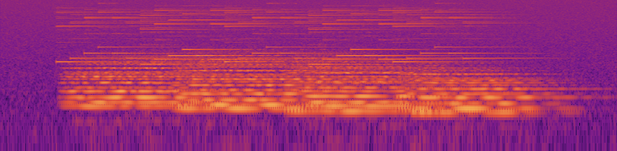
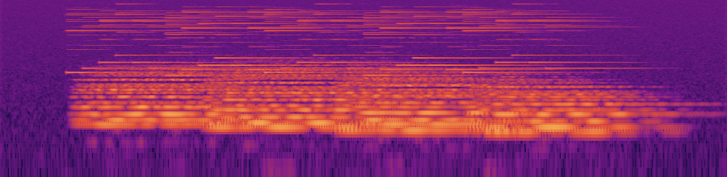
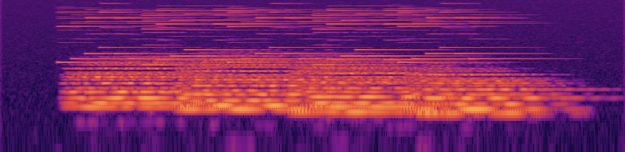
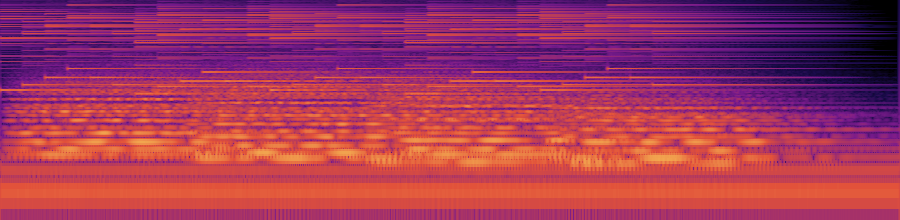
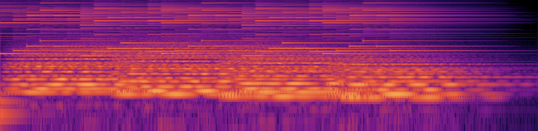
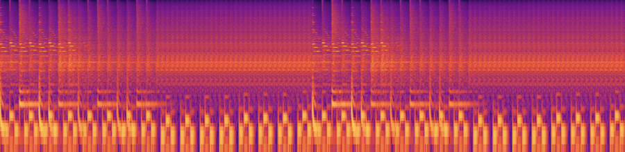
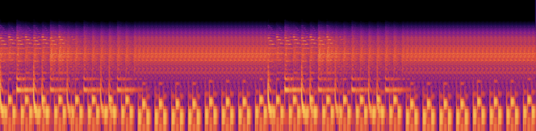
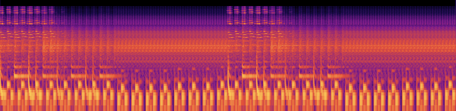
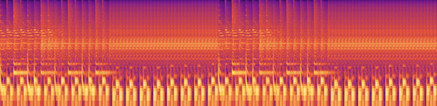

Nothing on this page asks you to take our word. The clips were rendered by Torqwave, the numbers were measured by its own code, and what has not been checked is listed as plainly as what has.
Damage of a known kind and amount, put on clips Torqwave's own instruments played, then repaired by the same code the Effects menu runs, at its default settings.
The clips are a Torqwave Synth pad and bell, and a factory kit from the Sequence Library: nobody's recording. Because the clean clip is kept, each repair is measured against it. The pictures are Torqwave's spectrogram of each clip (the left channel, 20 Hz at the bottom to 24 kHz at the top). Made by TorqwaveTests --quality-demos, in the repository; run it and you get the same files. These are measurements, not listening tests: play the clips and judge.
Hiss, with a noise print
The clip
Torqwave Synth: Concrete Pad's chords under Cold Bell's arpeggio, four bars at 120 BPM, after a second of the noise alone.
The damage
White noise at -38 dBFS RMS over the whole clip.
The repair
Effects > Noise Reduction and Repair > Noise Reduction: the print taken from the first second, then the whole clip reduced by 12 dB (the default) and by 24 dB.
With the hiss

Reduced by 12 dB

Reduced by 24 dB

Measured
With the hiss
Reduced by 12 dB
Reduced by 24 dB
The noise alone, in the first second (RMS)
−38.0 dBFS
−49.9 dBFS
−61.5 dBFS
How far the music is from the clean clip
−13.7 dB
−21.0 dB
−21.4 dB
The second row is everything that differs from the clean clip, against the clean clip's own level: the hiss before, what is left of it and what the reduction did to the music after. Lower is nearer the original. The noise falls by about what was asked for; the music ends about as near at 24 dB as at 12, so the deeper setting buys quieter gaps, not a truer clip.
Mains hum
The clip
Torqwave Synth: Concrete Pad's chords under Cold Bell's arpeggio, four bars at 120 BPM.
The damage
A 50 Hz hum with five harmonics: the fundamental at -34 dBFS, each harmonic 6 dB under the one before.
The repair
Effects > Noise Reduction and Repair > Remove Hum at its defaults (50 Hz, 8 harmonics, Q 30).
With the hum

Hum removed

Level at
Clean clip
With the hum
Hum removed
50 Hz
−91.0 dBFS
−34.0 dBFS
−66.2 dBFS
100 Hz
−76.9 dBFS
−40.0 dBFS
−68.5 dBFS
150 Hz
−74.3 dBFS
−46.0 dBFS
−75.7 dBFS
Each row is the level of that one frequency over the whole clip (the left channel). The clean clip has a little there of its own, which the notches take too.
Missing highs
The clip
The factory kit EBM Kit (Industrial/EBM), its loop twice, as the Sequence Library plays it.
The damage
Everything over 5 kHz filtered away (eight 12 dB low-pass sections in a row at 5 kHz).
The repair
Effects > Noise Reduction and Repair > Spectral Recovery at its defaults (the cutoff found from the audio, level -3 dB, rebuilt up to 16 kHz).
The original

Nothing over 5 kHz

Highs rebuilt

Measured
The original
Nothing over 5 kHz
Highs rebuilt
Level from 6 to 16 kHz
−39.8 dB
−91.4 dB
−37.9 dB
The cutoff Torqwave found
5,000 Hz
Rebuilt highs are made from the band below them: they are a likeness of what was lost, not the lost sound itself. Compare the rebuilt clip with the original by ear.
Loudness: a loop brought to −10 LUFS
The clip
The factory kit EBM Kit (Industrial/EBM), its loop twice, as the Sequence Library plays it.
The damage
Nothing: the loop as the instruments made it.
The repair
Effects > Dynamics > Maximizer: Balanced, ceiling -1 dBTP, its gain set so the clip measures -10 LUFS.
As renderedThrough the Maximizer

Measured by Torqwave's loudness meter
As rendered
Through the Maximizer
Integrated loudness
−17.7 LUFS
−10.0 LUFS
True peak
-4.65 dBTP
-0.79 dBTP
Loudness range
3.2 LU
1.9 LU
Gain into the ceiling
8.3 dB
The true peak reads -0.79 dBTP on Torqwave's own meter, 0.21 dB over the −1 dBTP ceiling that was set. No sample is over the ceiling; the limiter measures the peaks between samples before its gain moves, and the moving gain and the clip at the ceiling make new ones. Leave that margin if a delivery spec is strict. This is 0.20.1 as released. It is corrected for the next release, where this clip reads −1.03 dBTP.
What these do not show
Made-up damage is easier than real damage. White noise, a pure hum and a clean low-pass are the textbook cases. A real recording's noise changes as it goes and its hum wanders. The changelog records what the repair tools did on four real recordings, and what had to be fixed after.
Two repairs were measured the same way and are not shown, because they did not do well enough. Click and Pop Repair at its defaults, on 60 clicks put into the pad and bell (one to three samples long, at 40 to 90% of full scale), left 16 of them standing. Repair Clipping, on the kit's loop cut off flat 4 dB over full scale, rebuilt all 334 clipped runs but left the clip no nearer the original by our measure (−34.6 dB from it before, −34.9 dB after). Both are open work. TorqwaveTests --quality-demos <folder> --also clicks,clipping renders them.
Every repair here ran at its defaults. Nothing was tuned to the clip.
Measured by the tests
Torqwave's changelog says what each piece of work measured, in numbers. These are its own sentences, with the entry each comes from.
Most were measured on test signals by the test suite on the development Mac; where the changelog says something was not tried by hand or not listened to, that is said here too. The changelog has all of it, and how Torqwave is tested says what the suite covers on each system.
Measured by the tests: every EBU Tech 3341 loudness case (1-5) reads its expected value to 0.1 LU (EBU's tolerance) at 48 and 44.1 kHz, every Tech 3342 loudness-range case (1-4) reads 5.00, 10.00, 15.00 or 20.00 LU as expected, and a quarter-rate sine sampled off its crests reads its true peak within 0.05 dB.
Measured by the tests on 32-bit float audio: a converted sine is 148 to 150 dB above its error for 44.1 to 48, 48 to 44.1, 44.1 to 96 and 96 to 44.1 kHz; the passband is flat within 0.000001 dB to 20 kHz; tones above 22.05 kHz leave at most -144.5 dB when going to 44.1 kHz; 44.1 to 96 and back nulls against the original to 148 dB.
Measured by the tests on a -12 dBFS tone in -40 dBFS white noise: 12 dB asked lowers the noise by 11.84 dB, 24 dB asked by 23.20 dB, the tone's level changes by 0.001 dB, and the noise under the tone drops 11.39 dB too.
Measured by the tests, on two seconds of 50 Hz hum with its third harmonic and a 1 kHz tone: the hum down 105 dB on both channels in the second second and 48 dB in the first tenth of a second, the tone changed by less than 0.001 dB
a 0.9 sine faded in and driven 12 dB into a -1 dBTP ceiling comes out with no sample over the ceiling and its true peak within 0.04 dB of it for every character (one that starts loud at once: 1.1 dB over at its start); a quiet sound with no gain passes bit for bit, where it was
the parametric EQ's minimum-phase and linear-phase runs agree within 0.04 dB per block on all four recordings, and a side band leaves the mono sum bit for bit (minimum phase) or within 1e-6 dB (linear)
every setting gives the same length and the same first sample (0 frames off, 0 over)
chains of 377 and 1029 frames of latency mix bit for bit like the session without them, in blocks of 333, 512 and 3000 frames. Playing from a jump matches the dry mix bit for bit, both through the mixer and through the player.
Measured by the tests: the whole session mixes down bit for bit like playback's mix.
every patch plays a held chord between -24 and -1 dB (the new ones at -12.2 to -7.3 dB, levelled to -9 dB, or -11 for pads, drones and textures); none is a near-copy of another in its category.
what is left beside the tone is 94.7 dB under it at worst, the level within 0.022 dB, and a tone the output can't hold comes through 89.6 dB down at worst.
1,018 sequences and 116 kits unpack; every one keeps the preset rules; Scripts/voice_names.txt matches the instruments' patches and kits; every voice names a patch or kit there is and sounds on it between -24 and -1 dB; the script run again writes the same files byte for byte; a kit's parts added together peak below -1 dB; no preset clicks on its voice
the whole suite on the merge with 0.20.0 and the Linux build fix, 2,579, all passing
What has not been checked
Also in the changelog's own words.
Not checked on Windows or Linux by hand for this release: the workflows build both packages without running the tests.
Not run on an Intel Mac itself.
They were chosen by the measurements above, which catch silence, clicks, dead macros and copies, and cannot tell a good sound from a dull one.
Not done: the new presets were not listened to one by one.
that the notes are right is measured, whether the result sounds like the recording to an ear is not known. Two notes at once are still matched as one.